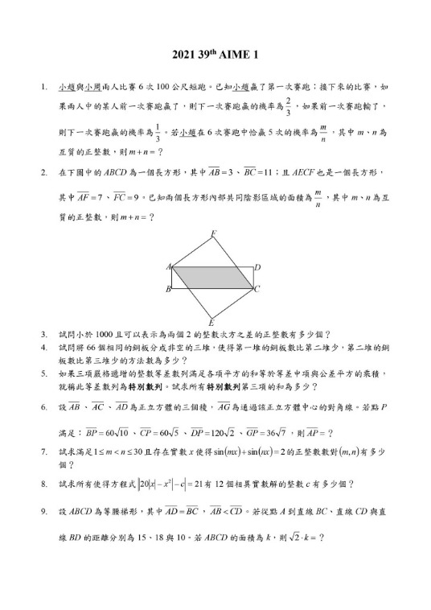
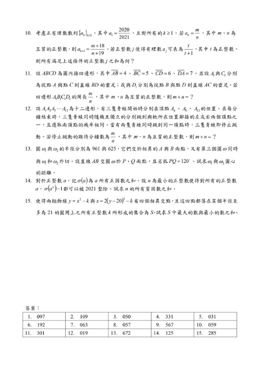
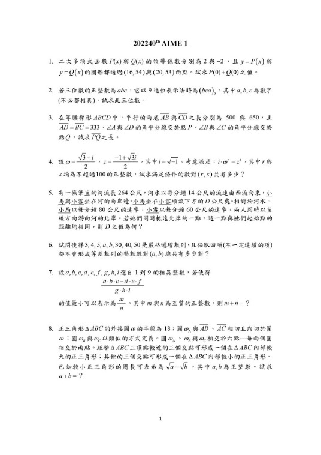
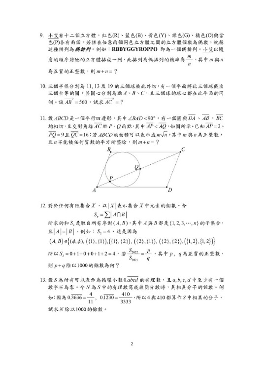
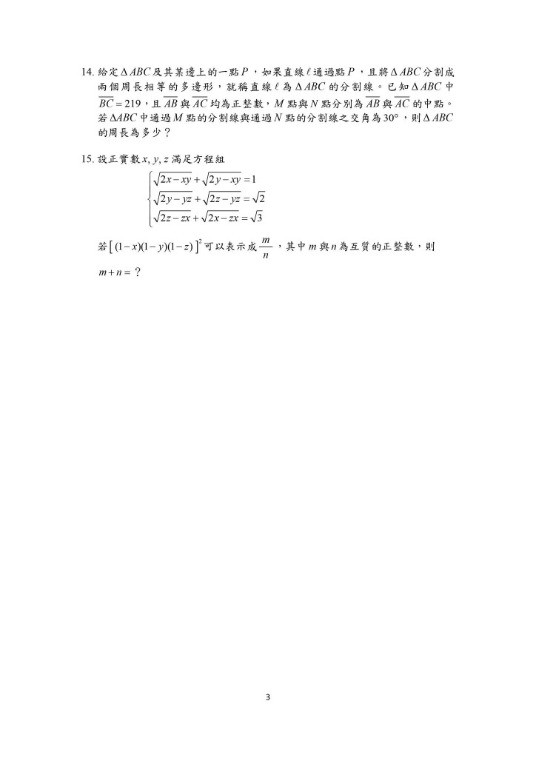

台清交成理工科的 二階筆試 如何準備？
高含金量的學習履歷！———美國數學邀請賽AIME
大學申請入學，台清交成的電資學院及若干理工科系，都需經歷難度比學測、分科測驗（指考）更高的二階段筆試，而其中數學是重中之重！
然而對於這個知識範圍不限定在課綱之內，技巧難度也往往超越大多數同學學習經驗的筆試，大多數學校與補習班卻缺乏相對應的課程，任由那些優秀孩子自行摸索，自生自滅！
一個可以被理解的理由：這是一個小眾精英市場，在學校無法採取能力分班或分眾教學；而補習班無利可圖，所以無心經營。
美國數學邀請賽(AIME)的題目，對於準備頂大二階筆試，或有心參與學科能力競賽的高中同學，是非常好的訓練題材。
這個競賽是AMC的進階賽，而且是由美國數學協會（MAA）主導的美國中學數學精英的主流賽事，在學習歷程的數理項目，顯然具有很高的含金量與說服力！
從台灣的數據分析
AMC,AIME系列的考試成績表現，對於檢測學生程度與預測未來學習潛力具有很高的準確度。
這次獵豹所開設的AIME衝刺課程，內容精彩豐富，教學深入淺出，也是台灣唯一針對這競賽的相關課程，我們熱情邀請對數學有能力、有熱情、志向遠大、不畏困難、追求卓越的同學，參與這場心智挑戰！
https://www.facebook.com/groups/695697124716309/permalink/1196949491257734/
下圖附上2021、2022兩屆的題目（中文翻譯）供大家參考。
https://www.facebook.com/groups/695697124716309/permalink/1199849424301074/




